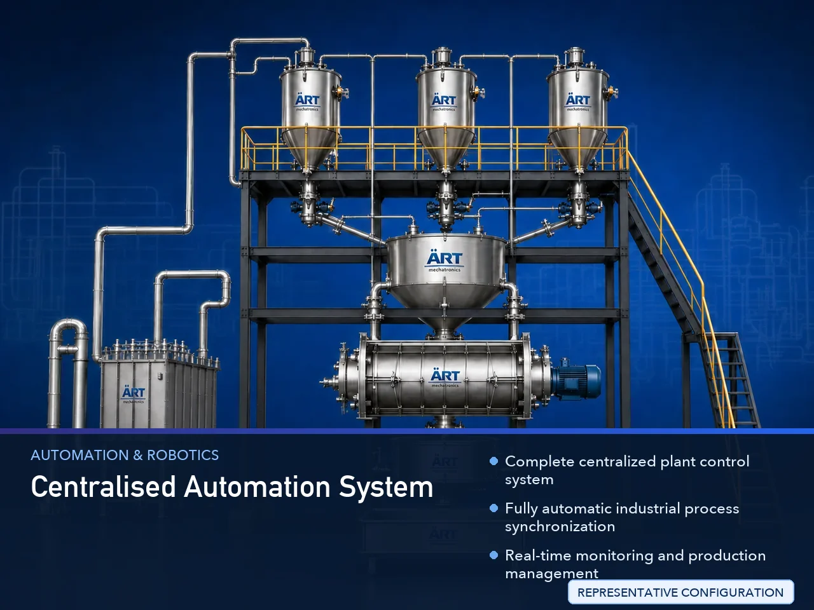

Complete Unit Centralised Automation System (Industrial Plant Control & Smart Factory Automation Solution)
A Complete Unit Centralised Automation System, also known as a Centralized Plant Automation System, Integrated Industrial Automation System, or Smart Factory Central Control System, is an advanced automation solution designed for complete centralized monitoring, control, synchronization,…

About the Centralised Automation System
Centralized automation systems are widely used for: ✔ Complete plant automation ✔ Production line synchronization ✔ Centralized machine monitoring ✔ Material handling automation ✔ Smart factory operations ✔ Industry 4.0 integration
The system improves: ✔ Production efficiency ✔ Operational accuracy ✔ Process synchronization ✔ Energy management ✔ Labor reduction ✔ Real-time production monitoring
Industrial centralized automation systems integrate: ✔ PLC automation systems ✔ SCADA software ✔ HMI control stations ✔ Servo and VFD drives ✔ Sensors and instrumentation ✔ IoT and Industry 4.0 connectivity
to create a fully intelligent and automated industrial plant environment.
Complete unit centralized automation systems are widely used in industries such as:
Pan masala & mouth freshener industries
Tobacco industries
Food processing industries
Spice industries
Pharmaceutical industries
Chemical industries
Packaging industries
Smart factory manufacturing plants
where complete process synchronization, intelligent monitoring, and automated plant operation are essential.
The system is highly suitable for: ✔ Automatic production plants ✔ Material handling systems ✔ Packaging automation lines ✔ Mixing and batching plants ✔ Drying and processing systems ✔ Smart warehouse automation
ART Mechatronics offers high-performance centralized automation systems, engineered for Industry 4.0 integration, intelligent process management, centralized plant control, and reliable long-term industrial automation performance.
Working Principle of Complete Unit Centralised Automation System
All industrial machines and systems are connected with centralized automation network: ✔ Conveyors ✔ Mixers ✔ Dryers ✔ Packaging machines ✔ Elevators ✔ Storage systems ✔ Utilities and process equipment
PLC controllers process automation logic and machine sequencing
SCADA system monitors and controls complete plant operation from centralized control room.
System synchronizes: ✔ Material feeding ✔ Conveyor movement ✔ Machine operation timing ✔ Production sequences ✔ Packaging flow ✔ Utility management automatically and accurately.
Centralized system displays: Machine status Production data Alarm systems Energy consumption Batch reports Process parameters through HMI and SCADA interface.
System manages: Emergency shutdown Safety interlocks Overload protection Motor control Process safety automation
Centralized automation integrates with: IoT systems ERP software Robotics Cloud monitoring Smart factory infrastructure
Types of Complete Unit Centralised Automation Systems
- 1. Food Processing Plant Automation System
Designed for: ✔ Complete food production and packaging automation
- 2. Pan Masala Plant Automation System
Suitable for: ✔ Supari processing, mixing, drying, and packaging automation plants
- 3. Packaging Line Centralized Automation
Uses: ✔ Conveyor and packaging synchronization systems
- 4. Smart Factory Automation System
Designed for: ✔ Industry 4.0 intelligent manufacturing operations
- 5. Material Handling Automation System
Suitable for: ✔ Bulk material conveying and feeding automation systems
- 6. Turnkey Industrial Automation Plant
Designed for: ✔ Fully integrated industrial automation projects
Industries Using Complete Unit Centralised Automation Systems
🌿 Pan Masala & Mouth Freshener Industry Complete supari processing and packaging automation plants 🚬 Tobacco Industry Tobacco blending, drying, and packaging automation systems 🍃 Food Processing Industry Fully automatic food production and handling plants 🌶️ Spice Industry Grinding, mixing, and packaging automation systems 💊 Pharmaceutical Industry Hygienic process control and production automation systems ⚗️ Chemical Industry Batching and process automation systems 📦 Packaging Industry High-speed packaging automation systems 🏭 Smart Factory Manufacturing Industry Industry 4.0 intelligent factory automation systems
Features & Advantages
✔ Complete centralized plant control system ✔ Fully automatic industrial process synchronization ✔ Real-time monitoring and production management ✔ Improves production efficiency and process accuracy ✔ Reduces labor and operational errors ✔ Smart alarm and safety interlock systems ✔ Energy-efficient automation management ✔ Industry 4.0 and IoT compatibility ✔ Reliable long-term industrial automation performance
Technical Highlights
Automation Components: PLC controllers SCADA software HMI touchscreen systems Servo drives VFD drives Communication: Ethernet Modbus Profibus IoT integration Features: Centralized control room Data logging Batch reporting Alarm management Energy monitoring Supported Systems: Conveyors Mixers Packaging machines Dryers Elevators Utilities Automation: Semi-automatic Fully automatic centralized systems
Turnkey Complete Unit Automation Solutions
ART Mechatronics offers: Complete centralized automation systems Smart factory and Industry 4.0 solutions Conveyor and material handling automation Production line synchronization systems Installation & commissioning After-sales service & AMC
Why Choose Art Mechatronics
Expertise in industrial automation and smart factory systems Customized centralized automation solutions for multiple industries High-performance and reliable automation technology Advanced process synchronization capability Proven automation performance across sectors
Applications
Food Processing Plants Pan Masala Manufacturing Units Tobacco Processing Plants Pharmaceutical Industries Packaging Facilities Smart Factory Automation Projects
Related Automation & Robotics machines
Get pricing & specs for the Centralised Automation System
Share the product, target capacity, current process and plant location. These details help our engineers discuss the right machine or line configuration.
One partner, from design to start-up
ART Mechatronics designs, manufactures, installs and commissions your Centralised Automation System solution with regional presence in India, UAE and Thailand.